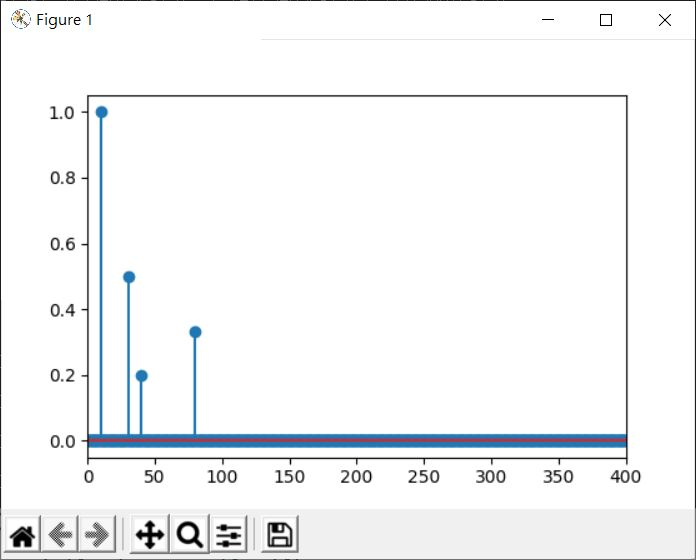
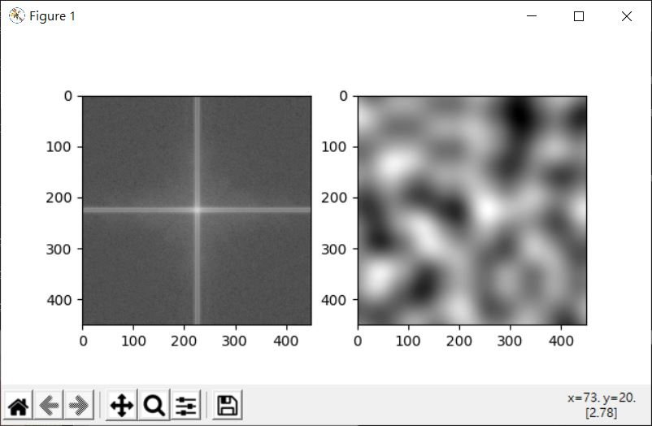

傅立葉轉換對於訊號分析極為重要，Scipy 也在 fft 模組提供相關實作，與 NumPy 的 fft 模組差別主要在於改進了 API 的使用、避免 NumPy 的實作臭蟲、更多的函式等。
對於基本的轉換、逆轉換等，使用上其實與 NumPy 的 fft 差別不大，例如可以將〈傅立葉轉換（二）〉中最後一個範例改為：
import numpy as np
from scipy import fft # 匯入 fft 模組
import matplotlib.pyplot as plt
t = 2 # 取樣時間
sample_rate = 800 # 取樣率，每秒取幾個樣本
def signal(t, sample_rate):
f = 10
x = np.linspace(0, t, int(t * sample_rate), endpoint = False)
return (np.sin(f * 2 * np.pi * x) +
np.sin(3 * f * 2 * np.pi * x) / 2 +
np.sin(4 * f * 2 * np.pi * x) / 5 +
np.sin(8 * f * 2 * np.pi * x) / 3)
samples = signal(t, sample_rate)
# 使用 fft 模組的 API
sp = fft.fft(samples)
freq = fft.fftfreq(samples.size, d = 1 / sample_rate)
sp2 = sp.copy()
# 頻率 10 與 -10 以外的部份設為 0
sp2[np.intersect1d(np.where(freq != 10), np.where(freq != -10))] = 0
# 逆轉換，使用 fft 模組的 API
samples2 = fft.ifft(sp2).real
x = np.linspace(0, t, int(t * sample_rate), endpoint = False)
plt.plot(x, samples)
plt.plot(x, samples2)
plt.show()
執行結果與〈傅立葉轉換（二）〉中對應範例是相同的。
在〈傅立葉轉換（二）〉談到，傅立葉轉換會有負頻率的部份，實際上與正頻率部份是對稱的，Scipy 的 fft 模組提供了 rfft、rfftfreq 函式，只計算正頻率的部份，可藉此加快運算速度：
import numpy as np
from scipy import fft
import matplotlib.pyplot as plt
t = 2 # 取樣時間
sample_rate = 800 # 取樣率，每秒取幾個樣本
def signal(t, sample_rate):
f = 10
x = np.linspace(0, t, int(t * sample_rate), endpoint = False)
return (np.sin(f * 2 * np.pi * x) +
np.sin(3 * f * 2 * np.pi * x) / 2 +
np.sin(4 * f * 2 * np.pi * x) / 5 +
np.sin(8 * f * 2 * np.pi * x) / 3)
samples = signal(t, sample_rate)
# 使用 rfft 與 rfftfreq
sp = fft.rfft(samples)
freq = fft.rfftfreq(samples.size, d = 1 / sample_rate)
amp = np.abs(sp)
ax = plt.gca()
ax.stem(freq, amp / np.max(amp))
ax.set_xlim([np.min(freq), np.max(freq)])
plt.show()
執行結果只會有正頻率部份：

逆轉換部份有對應的 irfft 函式，例如，將上面第一個範例改寫一下：
import numpy as np
from scipy import fft # 匯入 fft 模組
import matplotlib.pyplot as plt
t = 2 # 取樣時間
sample_rate = 800 # 取樣率，每秒取幾個樣本
def signal(t, sample_rate):
f = 10
x = np.linspace(0, t, int(t * sample_rate), endpoint = False)
return (np.sin(f * 2 * np.pi * x) +
np.sin(3 * f * 2 * np.pi * x) / 2 +
np.sin(4 * f * 2 * np.pi * x) / 5 +
np.sin(8 * f * 2 * np.pi * x) / 3)
samples = signal(t, sample_rate)
# 使用 rfft 等 API
sp = fft.rfft(samples)
freq = fft.rfftfreq(samples.size, d = 1 / sample_rate)
sp2 = sp.copy()
sp2[np.where(freq != 10)] = 0
samples2 = fft.irfft(sp2).real
x = np.linspace(0, t, int(t * sample_rate), endpoint = False)
plt.plot(x, samples)
plt.plot(x, samples2)
plt.show()
在二維傅立葉轉換方面，Scipy 的 fft 模組也有對應的函式，例如：
import imageio
import numpy as np
from scipy import fft # 匯入 fft 模組
import matplotlib.pyplot as plt
from matplotlib import cm
img = imageio.imread('perlin2d.jpg')
gray = np.dot(img[...,:3], [0.299, 0.587, 0.114])
f = fft.fft2(gray) # 二維傅立葉轉換
shifted = fft.fftshift(f) # 將頻率 (0, 0) 位移至中心
plt.subplot(1,2,1)
# 單純只是觀察，取 log
plt.imshow(np.log(np.abs(shifted)), cmap = cm.gray)
inversed = fft.ifft2(f) # 逆轉換
plt.subplot(1,2,2)
plt.imshow(inversed.real, cmap = cm.gray)
plt.show()
這會顯示以下的結果：
